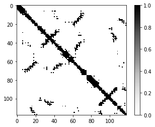
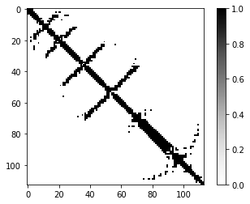

Project Name: One-shot contact prediction in CASP14
Setup
We are here right before CASP14, unfortunately for some reason (see more) we only have one training sample, but we still need to train a model to participate in CASP14, what should we do?
Available data
- Training data: T918-D3
- Validation data: T0859-D1
We assume that we already have the features stored in .2d.npy format file and distance saved in .contact format file.
The code
Let's begin!!!!!!!!....... by import something.
# -*- coding: utf-8 -*-
"""
@author: Yang Li
"""
import torch.nn as nn
import torch.nn.functional as F
import math
import torch
import numpy as np
from torch.autograd import Variable
import torch.optim as opt
then we build some basic blocks and a ResNet:
def conv3x3(in_planes, out_planes):
"""3x3 convolution with padding"""
return nn.Conv2d(in_planes, out_planes, kernel_size=3,
padding=1, bias=False)
class BasicBlock(nn.Module):
expansion = 1
def __init__(self, planes):
super(BasicBlock, self).__init__()
self.conv1 = conv3x3(planes, planes)
self.bn1 = nn.InstanceNorm2d(planes)
self.relu = nn.ReLU(inplace=True)
self.conv2 = conv3x3(planes, planes)
self.bn2 = nn.InstanceNorm2d(planes)
def forward(self, x):
residual = x
out = self.conv1(x)
out = self.bn1(out)
out = self.relu(out)
out = self.conv2(out)
out = self.bn2(out)
out += residual
out = self.relu(out)
return out
class ResNet(nn.Module):
def __init__(self, feature_size,hidden_size=64):
super(ResNet, self).__init__()
self.conv1 = nn.Conv2d(feature_size, hidden_size, kernel_size=1, bias=False)# transit layer
self.bn1 = nn.InstanceNorm2d(hidden_size)
self.relu = nn.ReLU(inplace=True)
self.resblock1=BasicBlock(hidden_size)#first block
self.resblock2=BasicBlock(hidden_size)#second block
self.conv2 = nn.Conv2d(hidden_size, 1, kernel_size=1)
self.sig=nn.Sigmoid()# final activition function : sigmoid
def forward(self, x):
x=self.conv1(x)
x=self.bn1(x)
x=self.relu(x)
x=self.resblock1(x)
x=self.resblock2(x)
x=self.conv2(x)
x=self.sig(x)
return x
Now we have built a resnet with 2 residual blocks. Time for training and testing:
train_x=np.load('T0918-D3.2d.npy')
print(train_x.shape)
train_y=np.genfromtxt('T0918-D3.contact')
test_x=np.load('T0859-D1.2d.npy')
test_y=np.genfromtxt('T0859-D1.contact')
print(test_x.shape)
run the code, we can have:
(445, 118, 118)
(445, 113, 113)
First dimension is feature number, we have 445 features, protein length for T0918-D3 is 118 and 113 for T0859-D1. how about the contact map?
import matplotlib.pyplot as plt
def plotmatrix(x):
try:
plt.imshow(x,cmap='Greys');
plt.colorbar()
plt.show()
except:
print('Unable to plot!')
train_y[train_y<8.0]=1
train_y[train_y>=8.0]=0
test_y[test_y<8.0]=1
test_y[test_y>=8.0]=0
plotmatrix(train_y)
plotmatrix(test_y)
train_x,train_y=Variable(torch.FloatTensor(np.array([train_x]))),Variable(torch.FloatTensor(train_y))
test_x,test_y=Variable(torch.FloatTensor(np.array([test_x])),volatile=True),Variable(torch.FloatTensor(test_y),volatile=True)
Run it.


Maybe we should find a function to guide the model training, usually people use cross entropy loss function.
Pytorch has mant built-in loss function, but I prefer writing my own loss function:
def loss_function(output,target,epsilon=1e-8,):
losses= -(target* torch.log(output + epsilon) +
(1. - target) * torch.log( 1. - output +epsilon) )
loss= torch.mean(losses)
return loss
What is the loss function if we do not training?
model=ResNet(445,64)
model.eval()
pred0=model(test_x)
loss=loss_function(pred0,test_y)
print('Random loss:',loss.data[0])
Run it:
Random loss: tensor(0.7249)
That means, without any training, the prediction loss of init model is 0.7249. Then we do some training:
optimizer=opt.Adam(model.parameters())
model.train()
for i in range(100):
optimizer.zero_grad()
y_pred=model(train_x)
aloss=loss_function(y_pred,train_y)
aloss.backward()
optimizer.step()
if i>0 and i%10==0:
print(i,'th training loss:',aloss.data[0])
model.eval()
predi=model(test_x)
loss=loss_function(predi,test_y)
print(i,'th validation loss:',loss.data[0])
model.train()
Run the code, the output is:
10 th training loss: tensor(0.2864)
10 th validation loss: tensor(0.3629)
20 th training loss: tensor(0.2072)
20 th validation loss: tensor(0.3088)
30 th training loss: tensor(0.1598)
30 th validation loss: tensor(0.2765)
40 th training loss: tensor(0.1254)
40 th validation loss: tensor(0.2571)
50 th training loss: tensor(0.0996)
50 th validation loss: tensor(0.2500)
60 th training loss: tensor(0.0785)
60 th validation loss: tensor(0.2407)
70 th training loss: tensor(0.0584)
70 th validation loss: tensor(0.2341)
80 th training loss: tensor(0.0407)
80 th validation loss: tensor(0.2287)
90 th training loss: tensor(0.0287)
90 th validation loss: tensor(0.2225)
Both training loss and validation loss are decreasing, That's good! But the training loss is very close to 0, which is over-fitting, perhaps, very dangerous! The Best way to avoid over-fitting is collecting more data.
Notes
- In pytorch 0.3.1, we need to use Variable(Tensor) to make a Tensor Autogradable, But in later versions, we donot need that.
- Variable(Tensor,volatile=True) is used for test, since we do not need gradients, Just inference.
- Be careful with model.eval() and model.train() which controls whether some layers are trainable. use model.eval() when you do tests. use model.train() when you are training.
- optimizer.zero_grad() is required before each batch.
Download
All the data in the example can be downloaded here.